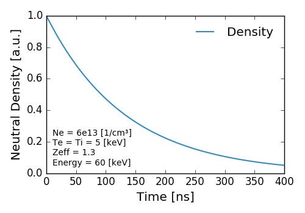

The collisions that a neutral particle experiences as it travels through a plasma changes the distribution of its energy level population. The types of collisions that FIDASIM takes into account is as follows
The above rate coefficients have units of \(cm^3/s\) and are calculated by averaging the respective collisional cross sections with a Maxwellian of the relevent species. The population of the \(n^{th}\) energy level of a neutral atom, \(f_n\), can be described by the following time dependent differential equation $$ \frac{df_n}{dt} = - \left ( \sum_{k=i,Z} f_n d_k X^k_n + \sum_{k=e,i,Z} f_n d_k I^k_n \right ) \\ + \sum_{m>n} \left (f_m A_{m \rightarrow n} + \sum_{k=e,i,Z} (f_m d_k q^k_{m \rightarrow n} - f_n d_k q^k_{n \rightarrow m}) \right ) \\ + \sum_{n>m} \left (-f_n A_{n \rightarrow m} + \sum_{k=e,i,Z} (f_m d_k q^k_{m \rightarrow n} - f_n d_k q^k_{n \rightarrow m}) \right ) $$ where the \(d_k\) are the respective target densities.
By rearranging the terms and letting \(q^k_{n \rightarrow m}\) represent excitation/de-excitation depending on the order of the indices we can get the following equation $$ \frac{df_n}{dt} = C_{n,n} f_n + \sum_{m \ne n} C_{n,m} f_m $$ where $$ C_{n,n} = - \left [ \sum_{k=i,Z} d_k X^k_n + \sum_{k=e,i,Z} d_k I^k_n + \sum_{m \ne n} \left ( A_{n \rightarrow m} + \sum_{k=e,i,Z} d_k q^k_{n \rightarrow m} \right ) \right ] $$ and $$ C_{n,m} = A_{m \rightarrow n} + \sum_{k=e,i,Z} d_k q^k_{m \rightarrow n} $$
The system of differential equations can be compactly represented as a matrix multiplication. $$ \frac{d \mathbf{f}}{dt} = \mathbf{C} \cdot \mathbf{f} $$
The solution of this matrix differential equation takes the form of a matrix exponential
$$\mathbf{f}(t) = e^{\mathbf{C} t} \cdot \mathbf{f}(0) = \mathbf{S} \cdot e^{\mathbf{\Lambda} t} \cdot \mathbf{S}^{-1} \cdot \mathbf{f}(0)$$
where \(\mathbf{f}(t)\) is a vector of the neutral population flux [1/s] for each energy state at time \(t\), \(\mathbf{S}\) is the matrix of the eigenvectors of \( \mathbf{C} \) and \( \mathbf{\Lambda} \) is a diagonal matrix containing the eigenvalues of \( \mathbf{C} \). The fractional flux of a neutral traveling through a uniform plasma is shown below.
As you can see the relative populations between states converges fairly quickly.
The number of neutrals in a given state after a time \(t\), \(\mathbf{n}(t)\), is given by
$$\mathbf{n}(t) = \mathbf{S} \cdot ( \mathbf{\Lambda}^{-1} \cdot e^{\mathbf{\Lambda} t} - \mathbf{\Lambda}^{-1} ) \cdot \mathbf{S}^{-1} \cdot \mathbf{f}(0) $$
If \(t\) represents the time spent inside a grid cell the neutral density can be calculated by dividing the above equation by \(V_{cell}\). The total neutral density of a mc marker is shown below.

As you can see over time the total number of neutrals decreases exponentially.